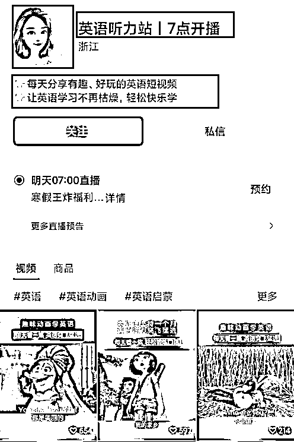
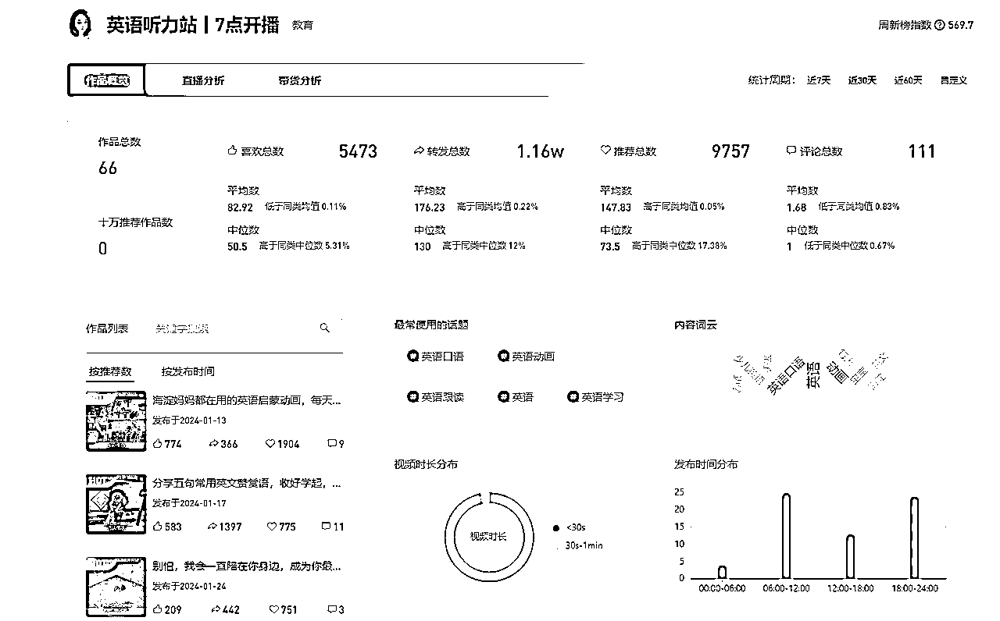
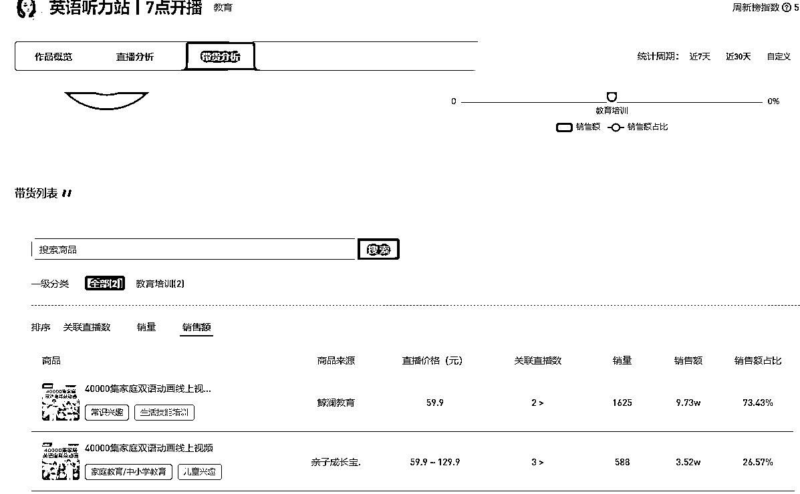
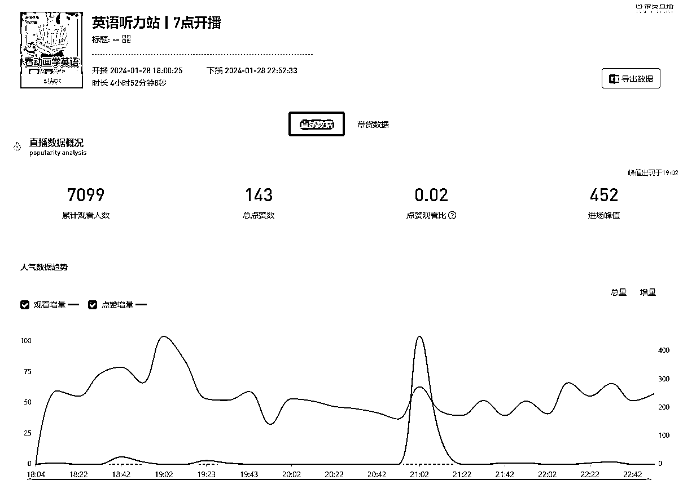
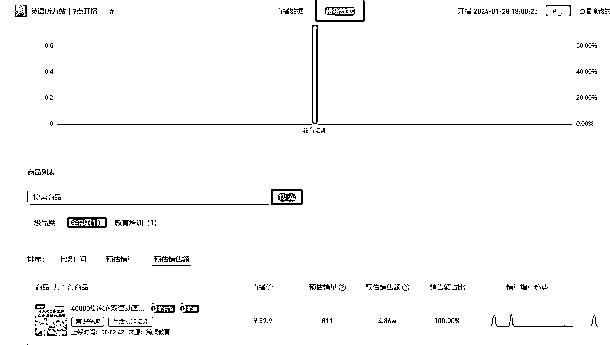
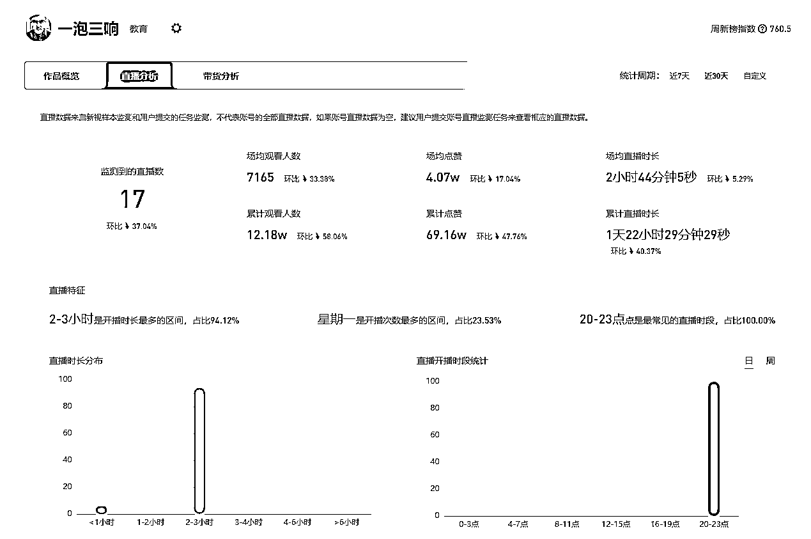
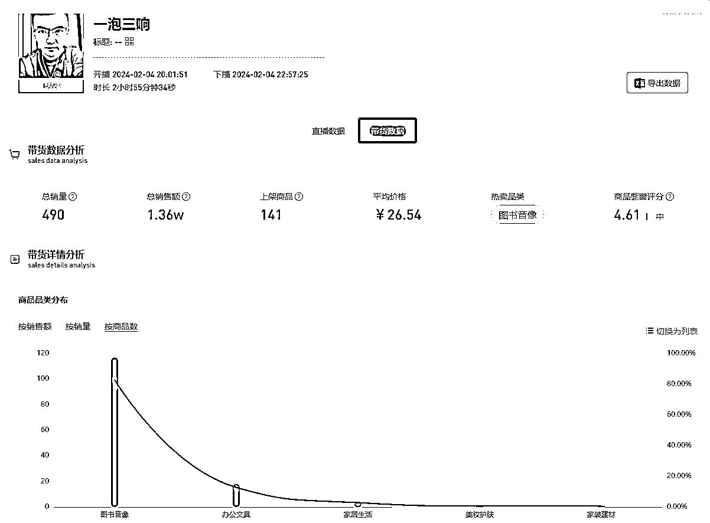
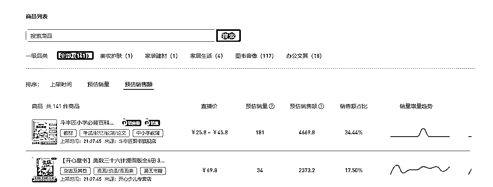

来源：https://cjub9qszx5.feishu.cn/docx/UYZcdILBtoNTRUxo8xUcpSOYn7f
在视频号上靠一些小众课程赚个几百万、几千万的大有人在。早上宝妈带娃，卖教育规划，5000块的课，一场能卖5-6单；晚上白领下班，卖职业规划，399的课卖出4000单。
为什么会是这个时间点直播引流？这类型的知识付费，解决的是什么人群的什么问题？他们核心打法是什么，是靠IP营销卖课，还是电商人货场那套玩法？一场直播下来，到底能赚多少钱？在这篇文章中，通过对案例的拆解对这些问题进行一些简短分析。
流量来源：视频号，直播
赛道方向：知识付费
账号案例：英语听力站，一泡三响
关于知识付费：
知识付费是一种商业模式，指的是基于对特定知识、技能或内容的需求，通过付费获取相关的知识和信息。在知识付费模式下，知识提供者可以将自己的专业知识、经验或创作成果转化为可付费的产品或服务，供他人学习、获取或使用。
这种模式的兴起得益于互联网技术的发展和信息传播的便捷性，使得人们可以更轻松地分享、销售和获取知识。知识付费的形式多种多样，可以是在线课程、电子书籍、教学视频、咨询服务、付费会员社区等。
知识付费的优势在于提供了一种个性化、有针对性的学习和获取知识的方式。人们可以根据自己的需求和兴趣选择特定领域的知识，并通过付费获得高质量、经过整理和加工的内容。同时，知识提供者也能够将自己的专业知识变现，激励更多人投入到知识创作和分享中。
知识付费的方向太多了，简单举几个例子，英语方向，职场心理，青少年学习，AI应用等，所以要明确直播视频号的定位，选择一个适合自己的或者自己擅长的方向，做好定位，然后根据自己的定位建立账号。
下面是我找到的案例的视频号图片作为参考。

视频号的建立，内容相比其他平台要简单些，头像，昵称和简介三部分内容，保证和你的定位相关，同时积极向上，能够起到引导观众产生学习知识的想法的效果。
在定位明确后，就可以根据自己的选题去发布视频，来积累粉丝，由于背靠微信平台的原因，视频号还是比较适合冷启动的，当然，要保证稳定的更新频率与合适的相关内容，还是用英语听力站账号来举例，该视频号没有10w+推荐的爆款视频作品，但是更新频率比较稳定，而且内容富有一定的趣味性，能够保证用户的分享和粉丝的积累过程。

接下来是对视频号以及直播的案例分享。
细分领域：英语听力学习
变现方式：直播带货
需求：通过有趣的口语视频动画吸引相关受众，同时针对对英语口语有想法的人进行需求的塑造与强化，产生成交
流量：未获取到流量来源信息，根据直播时长与累计观看人数分析，初步推测为自然流量
产品：家庭双语动画，此类商品资源小黄鱼等平台即可获取
注意事项：虽然可以直接获取视频资源，但是如何推送到用户部分也是一个值得关注的问题，经过几天的参考可以明确的是，英语资料相关商品中，很多差评原因都是，获取来的视频资源直接售卖后通过网盘形式推送给用户，用户对此非常不满，给出不专业的评价，所以，如果希望能够获得更好的效果，可以考虑与相关店铺进行合作分销的形式进行带货；或者有能力的可以将课程带到相关的视频平台上，依托平台进行销售，由于时间原因，此部分细节并未落实明确。
变现：直播间挂车，通过术语引导用户购买

其中单场直播相关数据如下图：


细分领域：儿童教育
变现方式：直播带货
需求：通过话术调动家长望子成龙的心态，促成下单，产生成交
流量：未获取到流量来源信息，根据直播时长与累计观看人数分析，初步推测为自然流量
该博主有多条高喜欢视频，实际内容精准定位到家长身份的中年用户，通过能够吸引家长用户的视频内师生对话形式达成用户与商品的关联。
产品：儿童教辅书籍，来源推测为店铺合作。
变现：直播间挂车，通过术语引导用户购买

单场直播数据如下：


通过以上的案例可以看出，目前视频号知识付费的玩法对于个人来讲依然可行，虽然视频号教育方向已经有很多蓝V存在，但是个人依然有自己的流量，通过人货场模式依然可以获得不错的收益。
由于本人的数据获取能力有限，对于商品收益的分成部分没有拿到详细数据信息，不过即使按照30%的比例来算，直播的收益相比非互联网行业仍是比较可观的。
当然，以下两点是要做到的：
1.定位明确，做某个细分领域，如：英语口语，职场心理，少儿教育，AI应用等
2.抓住该定位中的用户群体，以及该用户群体的需求，如：在少儿教育方向，定位的用户实际应该是家长群体，那么就根据家长这一群体的休息时间和对孩子的期盼，把希望寄托在孩子身上的想法进行直播的设置以及话术的引导，最终达到成交的效果。